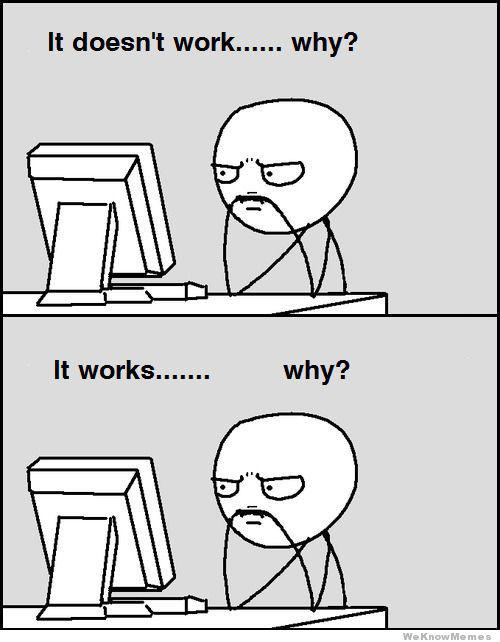

Učebnica objektovo orientovaného programovania¶
Predmet Objektovo orientované programovanie je určený pre tretí ročník na SPŠE v Prešove. Medzi jeho hlavné ciele patrí osvojenie si základov objektovo orientovaného programovania a tvorbe programov v jazyku Java. Okrem toho predmet rozvíja a upevňuje základné znalosti programovania a softvérového vývoja.

Výučba sa zameriava na moderné aspekty jazyka Java za pomoci použitia najnovších nástrojov a umelej inteligencie. V neposlednej rade sa predmet venuje rozvíjaniu schopností tvorivého riešenia problémov, kritického myslenia a výchove k zodpovednosti a samostatnosti.
Počet hodín: 3 hodiny týždenne, z toho 1 hodina teórie a 2 hodiny cvičenia. Doplňujúci povinne voliteľný predmet OPGP sa vyučuje 2 hodiny týždenne. Všetky veci uvedené na týchto stránkach sú aktuálne ku školskému roku 2025/2026.
Upozornenie
Text neprešiel jazykovou ani štylistickou úpravou ¯\_(ツ)_/¯. Tieto stránky sú v procese tvorby a pravidelne prechádzajú mnohými zmenami. Návrhy a pripomienky adresujte autorovi na adresu jozef@wagjo.com
Copyright © 2025, Jozef Wagner. Licencované v rámci CC BY-NC-SA 4.0